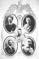

Página histórica preservada em captura arquivística.
Ferruccio fu sposato con Elvira
Bigoni, nata il 25/9/1898 a Copparo (FE) da Pietro Bigoni e Lucia Ida
Andreotti; era quindi più giovane del marito di 15 anni.
La coppia ebbe due figli: Giovanni [página não recuperada no acervo]
e Franco [página não recuperada no acervo], entrambi corridori
automobilistici.
La signorilità e la simpatia di Ferruccio
gli valsero una grande popolarità ed il riconoscimento dell’appartenenza
al fiore degli automobilisti toscani, assieme al conte Brilli-Peri, al conte
Giulio Masetti e ad Emilio Materassi, come attestato dal pannello
commemorativo [página não recuperada no acervo] (di fonte sconosciuta - sul pannello è stato aggiunto
anche il ritratto di Giovanni dopo la sua scomparsa).
Ferruccio morì il 25 gennaio 1928, all'età
di 44 anni, a seguito di un incidente d’auto durante la prova di un’auto
nel Parco delle Cascine, lasciando la moglie Elvira, trentenne, ed i figli
Giovanni e Franco. Al funerale, celebrato in Duomo, parteciparono tutte
le autorità civili e militari fiorentine come documentato dalla stampa
cittadina.
ALBUM:
Clicca sulla foto che vuoi ingrandire.

[página não recuperada no acervo]